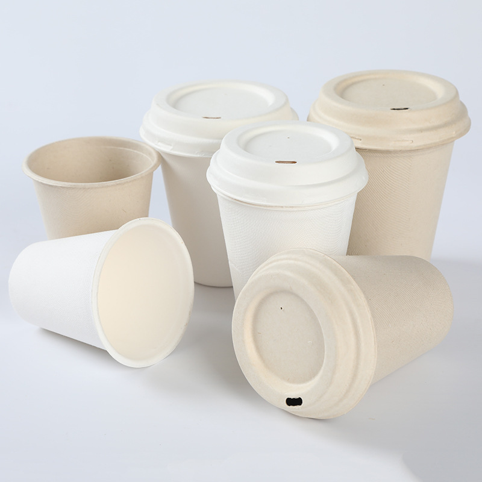
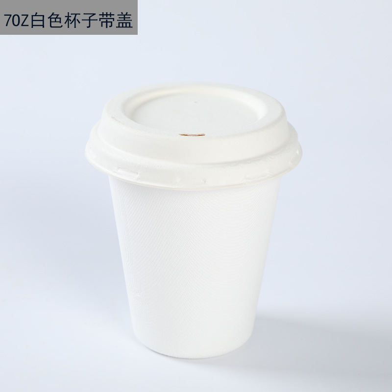
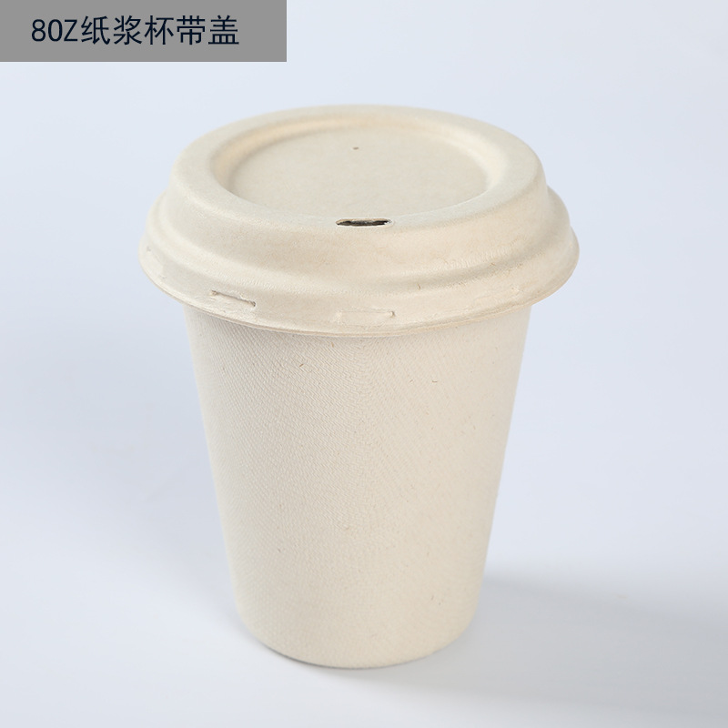
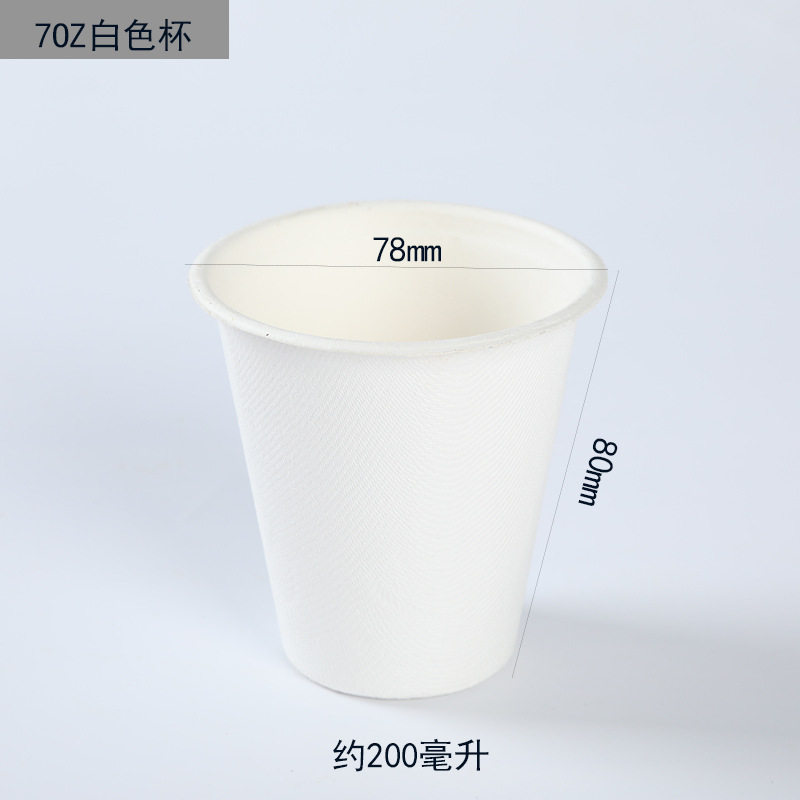
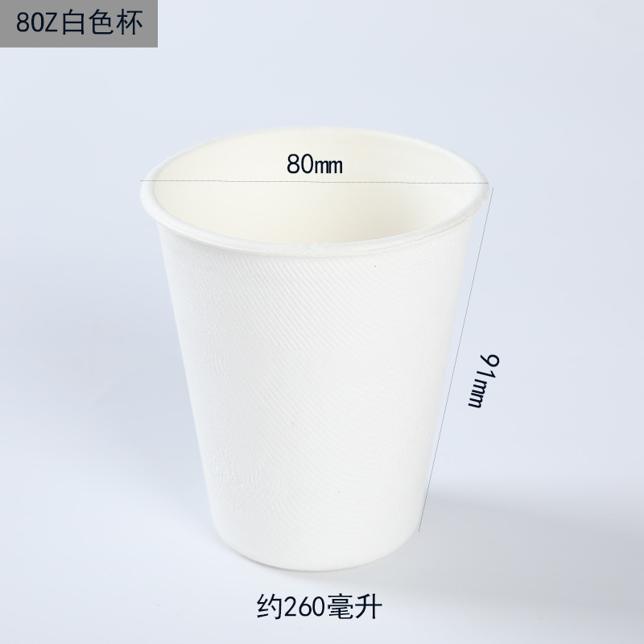
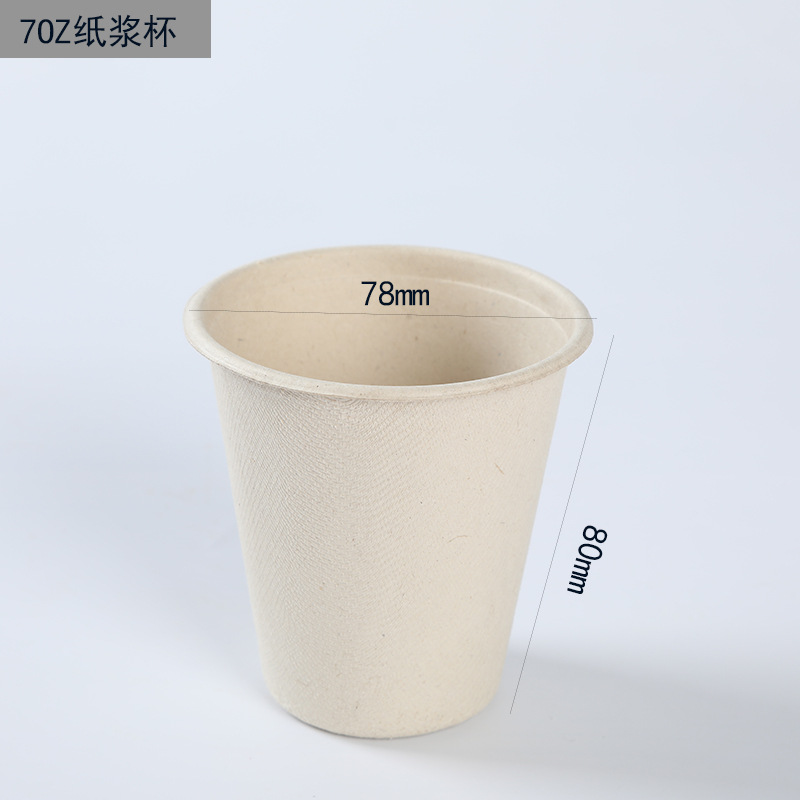
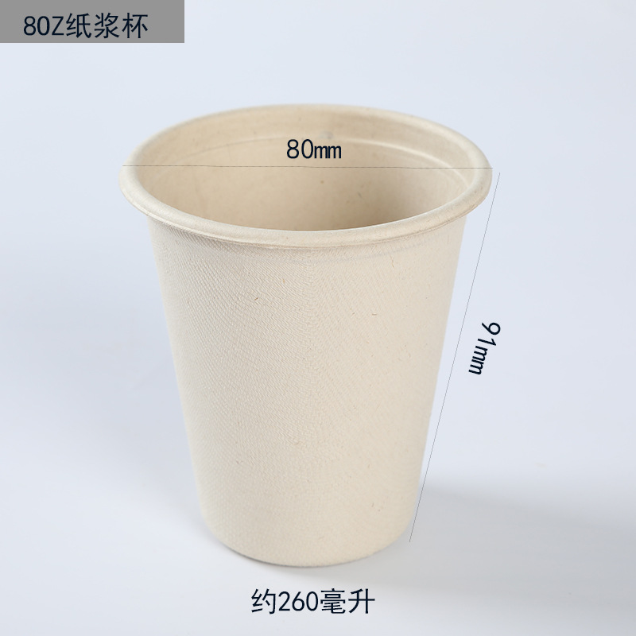

WHOLESALE BAGASSE DRINKWARE
7oz & 8oz Sugarcane Pulp Cups with Lids
Biodegradable drink cups made from renewable sugarcane bagasse pulp for cafés, tea shops, catering and takeaway service. Available in white and natural colors with matching pulp lids.
- Microwave and refrigerator suitable
- Matching sip lid available
- 50 pieces per bag
- MOQ from 1,000 pieces
- Custom logo and carton packaging
Product Specifications
Choose from two practical capacities for tasting, coffee, tea and takeaway beverage applications. Contact us for carton dimensions, gross weight and destination-based shipping quotations.
| Material | Renewable sugarcane bagasse pulp |
|---|---|
| Available sizes | 7oz / 8oz |
| 7oz specification | Approx. 200ml · 78mm top diameter · 80mm height |
| 8oz specification | Approx. 260ml · 80mm top diameter · 91mm height |
| Colors | White / Natural |
| Lid | Matching sugarcane pulp sip lid available |
| Packing | 50 pcs per bag · 1,000 pcs per carton |
| MOQ | 1,000 pieces |
| Heating & storage | Suitable for microwave use under recommended conditions and refrigeration |
| Customization | Custom logo and outer carton packaging available |
| Samples | Free samples available; shipping terms confirmed by destination |
| Lead time | Approximately 7–15 days after order confirmation |
Plant-based materialMade from renewable sugarcane bagasse pulp.
Takeaway readyStackable cup body with a matching sip lid.
Wholesale supportFree samples, low MOQ and custom packaging options.
Real Product Details







Request a Wholesale Quotation
Send your required size, quantity, logo requirements and destination. Free samples are available.
Email Your RFQWhatsApp for Quote